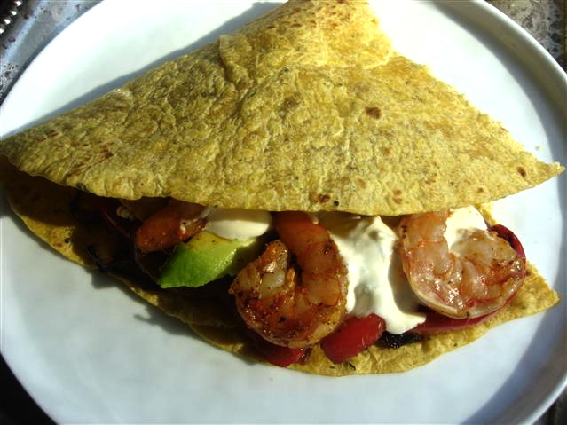

Chipotle Lime Shrimp Fajitas
Fragrant lime, smoky chipotle chilies and rich shrimp combine for a fresher take on an old favourite. Topped with an addictive chipotle cream, this recipe is sure to please and can easily be doubled or tripled to feed a crowd. A squeeze of fresh lime juice before eating is essential!
Chickpeas can be substituted for the shrimp with great success, and the amount of ground chipotle can be scaled up or down to taste. - Rachel P.

½ lb. shrimp, peeled and deveined
½ tsp. ground chipotle chile, or your preferred spice mixture
Salt and pepper
Persian Lime Olive Oil
2 red bell peppers, thinly sliced
2 onions, thinly sliced
2 cloves of garlic, minced
Persian Lime Olive Oil
1 tbsp. ground chipotle chile
Salt and pepper
To assemble:
Ripe avocado, thinly sliced
Warm tortillas
Chipotle sour cream
Lime wedges
DIRECTIONS:
1. Toss the shrimp with Persian Lime olive oil and desired seasoning. Cook over medium heat in a large skillet until light pink and loosely curled, about 4 minutes (this will depend on the size of your shrimp, but the important thing is to not overcook). Remove from the pan and reserve on a plate.
2. Adding more Persian Lime oil if necessary, cook the peppers, onions and garlic in the same skillet over medium-high heat. When the vegetables start to brown, add the ground chipotle, salt and pepper.
3. While the vegetables are cooking, make the chipotle cream, warm the tortillas and slice the avocado.
4. Continue to cook the vegetables until tender and golden. Take off the heat and add the shrimp to the pan to warm them through.
5. To assemble, top the warm tortillas with the cooked vegetables and shrimp, some ripe avocado and the chipotle cream. Spritz with fresh lime juice, and eat.
Serves 4.